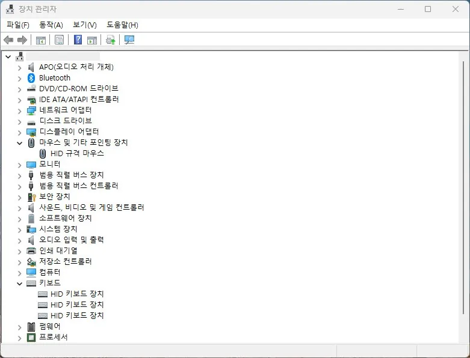

입력 장치
마우스·키보드 인식 안됨 원인과 점검 순서
마우스나 키보드가 갑자기 작동하지 않거나, 부팅 후 인식되지 않는 경우
입력 장치가 인식되지 않는 원인은 크게 세 가지입니다. USB 포트·허브 문제, 드라이버 재로드 실패, 무선 장치의 수신기·배터리 문제입니다. 순서대로 확인하면 대부분 빠르게 원인을 좁힐 수 있습니다.
특히 윈도우 빠른 시작이 켜진 환경에서는 완전한 재부팅이 아닌 상태로 켜지기 때문에 USB 드라이버가 재초기화되지 않아 인식 실패가 나타나는 경우가 많습니다.
이 가이드가 필요한 상황
- 부팅 후 마우스 커서가 움직이지 않는다.
- 키보드를 눌러도 반응이 없다.
- 무선 마우스·키보드가 갑자기 연결이 끊겼다.
- USB 포트에 꽂아도 장치 인식음이 나지 않는다.
먼저 확인할 항목
- 다른 USB 포트에 직접 연결 — USB 허브를 거치지 말고 PC 본체 후면의 USB 3.0 포트에 직접 꽂아 보세요. 허브의 전원 부족으로 인식이 실패하는 경우가 자주 있습니다.
- 완전 재부팅 시도 — Shift 키를 누른 채 시작 메뉴 → 전원 → 다시 시작을 선택해 빠른 시작을 우회하는 완전 재부팅을 합니다. 빠른 시작 비활성화도 고려하세요.
- 무선 장치 점검 — 배터리를 새것으로 교체하고, USB 수신기를 뽑았다가 다시 꽂습니다. 페어링이 풀린 경우 리셋 버튼으로 재페어링하세요.
- 장치 관리자 확인 — 정상적으로 꽂혀 있는데 인식이 안 된다면 장치 관리자에서 해당 장치에 경고 표시가 있는지 확인하고, 드라이버를 제거 후 재설치하세요. 마우스 및 기타 포인팅 장치와 키보드 항목을 펼치면 현재 인식된 장치 목록을 볼 수 있습니다.

원인을 더 정확히 나누는 방법
유선과 무선의 점검 순서가 다름
유선 장치라면 포트와 케이블, 드라이버 순서로 점검합니다. 무선 장치는 배터리와 수신기 연결을 먼저 확인한 뒤 페어링 문제를 봅니다. 블루투스 장치라면 별도로 블루투스 드라이버 상태를 확인해야 합니다.
BIOS에서는 작동하는지 확인
PC 전원을 켜자마자 Del이나 F2를 눌러 BIOS 화면에 진입했을 때 키보드가 작동한다면 하드웨어 자체는 정상이고 윈도우 드라이버 문제입니다. BIOS에서도 작동하지 않는다면 포트나 장치 하드웨어 문제입니다.
확인 결과에 따른 다음 단계
- 다른 포트에서는 작동할 때 — 원래 포트의 USB 컨트롤러 문제입니다. 장치 관리자에서 USB 컨트롤러를 제거하고 재부팅해 자동 재설치되도록 합니다.
- 어떤 포트에서도 안 잡힐 때 — 드라이버 손상을 의심합니다. sfc /scannow로 시스템 파일을 점검하거나, USB 드라이버를 메인보드 제조사 홈페이지에서 재설치하세요.
- 무선 장치가 계속 끊길 때 — 전원 관리 설정에서 USB 선택적 절전을 비활성화하세요. 수신기와 다른 무선 장치(공유기, 블루투스 스피커) 간의 2.4GHz 간섭도 원인이 될 수 있습니다.
자주 묻는 질문
- 부팅 시 마우스·키보드가 안 잡히면 어떻게 하나요? USB 포트를 본체 후면의 다른 포트로 바꿔 연결해 보세요. 빠른 시작 기능이 켜져 있으면 드라이버 재로드에 실패하는 경우가 있어, Shift+재시작으로 완전 재부팅하는 것이 효과적입니다.
- 무선 키보드가 갑자기 안 잡히면? 배터리를 교체하고, 수신기를 다른 USB 포트에 꽂아 보세요. USB 허브보다 본체 포트에 직접 연결하면 더 안정적입니다.
최종 검토일: 2026-07-23